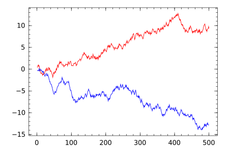

Set of unofficial examples of Julia the high-level, high-performance dynamic programming language for technical computing.
Below are a series of examples of common operations in Julia. They assume you already have Julia installed and working (the examples are currently tested with Julia v0.4.5).

Hello World
The simplest possible script.
println("hello world")
With Julia installed and added to your path
this script can be run by julia hello_world.jl, it can also be run from REPL by typing
include("hello_world.jl"), that will evaluate all valid expressions in that file and return the last output.
Simple Functions
The example below shows two simple functions, how to call them and print the results. Further examples of number formatting are shown below.
# function to calculate the volume of a sphere function sphere_vol(r) # julia allows Unicode names (in UTF-8 encoding) # so either "pi" or the symbol π can be used return 4/3*pi*r^3 end # functions can also be defined more succinctly quadratic(a, sqr_term, b) = (-b + sqr_term) / 2a # calculates x for 0 = a*x^2+b*x+c, arguments types can be defined in function definitions function quadratic2(a::Float64, b::Float64, c::Float64) # unlike other languages 2a is equivalent to 2*a # a^2 is used instead of a**2 or pow(a,2) sqr_term = sqrt(b^2-4a*c) r1 = quadratic(a, sqr_term, b) r2 = quadratic(a, -sqr_term, b) # multiple values can be returned from a function using tuples # if the return keyword is omitted, the last term is returned r1, r2 end vol = sphere_vol(3) # @printf allows number formatting but does not automatically append the \n to statements, see below @printf "volume = %0.3f\n" vol #> volume = 113.097 quad1, quad2 = quadratic2(2.0, -2.0, -12.0) println("result 1: ", quad1) #> result 1: 3.0 println("result 2: ", quad2) #> result 2: -2.0
Strings Basics
Collection of different string examples (string indexing is the same as array indexing: see below).
# strings are defined with double quotes # like variables, strings can contain any unicode character s1 = "The quick brown fox jumps over the lazy dog α,β,γ" println(s1) #> The quick brown fox jumps over the lazy dog α,β,γ # println adds a new line to the end of output # print can be used if you dont want that: print("this") #> this print(" and") #> and print(" that.\n") #> that. # chars are defined with single quotes c1 = 'a' println(c1) #> a # the ascii value of a char can be found with Int(): println(c1, " ascii value = ", Int(c1)) #> a ascii value = 97 println("Int('α') == ", Int('α')) #> Int('α') == 945 # so be aware that println(Int('1') == 1) #> false # strings can be converted to upper case or lower case: s1_caps = uppercase(s1) s1_lower = lowercase(s1) println(s1_caps, "\n", s1_lower) #> THE QUICK BROWN FOX JUMPS OVER THE LAZY DOG Α,Β,Γ #> the quick brown fox jumps over the lazy dog α,β,γ # sub strings can be indexed like arrays: # (show prints the raw value) show(s1[11]); println() #> 'b' # or sub strings can be created: show(s1[1:10]); println() #> "The quick " # end is used for the end of the array or string show(s1[end-10:end]); println() #> "dog α,β,γ" # julia allows string Interpolation: a = "wolcome" b = "julia" println("$a to $b.") #> wolcome to julia. # this can extend to evaluate statements: println("1 + 2 = $(1 + 2)") #> 1 + 2 = 3 # strings can also be concatenated using the * operator # using * instead of + isn't intuitive when you start with Julia, # however people think it makes more sense s2 = "this" * " and" * " that" println(s2) #> this and that # as well as the string function s3 = string("this", " and", " that") println(s3) #> this and that
String: Converting and formatting
# strings can be converted using float and int: e_str1 = "2.718" e = float(e_str1) println(5e) #> 13.5914 num_15 = parse(Int, "15") println(3num_15) #> 45 # numbers can be converted to strings and formatted using printf @printf "e = %0.2f\n" e #> 2.718 # or to create another string sprintf e_str2 = @sprintf("%0.3f", e) # to show that the 2 strings are the same println("e_str1 == e_str2: $(e_str1 == e_str2)") #> e_str1 == e_str2: true # available number format characters are f, e, g, c, s, p, d: # (pi is a predefined constant; however, since its type is # "MathConst" it has to be converted to a float to be formatted) @printf "fix trailing precision: %0.3f\n" float(pi) #> fix trailing precision: 3.142 @printf "scientific form: %0.6e\n" 1000pi #> scientific form: 3.141593e+03 # g is not implemented yet @printf "a character: %c\n" 'α' #> a character: α @printf "a string: %s\n" "look I'm a string!" #> a string: look I'm a string! @printf "right justify a string: %50s\n" "width 50, text right justified!" #> right justify a string: width 50, text right justified! @printf "a pointer: %p\n" 100000000 #> a pointer: 0x0000000005f5e100 @printf "print a integer: %d\n" 1e10 #> print an integer: 10000000000
String Manipulations
s1 = "The quick brown fox jumps over the lazy dog α,β,γ" # search returns the first index of a char i = search(s1, 'b') println(i) #> 11 # the second argument is equivalent to the second argument of split, see below # or a range if called with another string r = search(s1, "brown") println(r) #> 11:15 # string replace is done thus: r = replace(s1, "brown", "red") show(r); println() #> "The quick red fox jumps over the lazy dog" # search and replace can also take a regular expressions by preceding the string with 'r' r = search(s1, r"b[\w]*n") println(r) #> 11:15 # again with a regular expression r = replace(s1, r"b[\w]*n", "red") show(r); println() #> "The quick red fox jumps over the lazy dog" # there are also functions for regular expressions that return RegexMatch types # match scans left to right for the first match (specified starting index optional) r = match(r"b[\w]*n", s1) println(r) #> RegexMatch("brown") # RegexMatch types have a property match that holds the matched string show(r.match); println() #> "brown" # matchall returns a vector with RegexMatches for each match r = matchall(r"[\w]{4,}", s1) println(r) #> SubString{UTF8String}["quick","brown","jumps","over","lazy"] # eachmatch returns an iterator over all the matches r = eachmatch(r"[\w]{4,}", s1) for(i in r) print("\"$(i.match)\" ") end println() #> "quick" "brown" "jumps" "over" "lazy" # a string can be repeated using the repeat function, # or more succinctly with the ^ syntax: r = "hello "^3 show(r); println() #> "hello hello hello " # the strip function works the same as python: # e.g., with one argument it strips the outer whitespace r = strip("hello ") show(r); println() #> "hello" # or with a second argument of an array of chars it strips any of them; r = strip("hello ", ['h', ' ']) show(r); println() #> "ello" # (note the array is of chars and not strings) # similarly split works in basically the same way as python: r = split("hello, there,bob", ',') show(r); println() #> ["hello"," there","bob"] r = split("hello, there,bob", ", ") show(r); println() #> ["hello","there,bob"] r = split("hello, there,bob", [',', ' '], limit=0, keep=false) show(r); println() #> ["hello","there","bob"] # (the last two arguements are limit and include_empty, see docs) # the opposite of split: join is simply r= join(collect(1:10), ", ") println(r) #> 1, 2, 3, 4, 5, 6, 7, 8, 9, 10
Arrays
function printsum(a) # summary generates a summary of an object println(summary(a), ": ", repr(a)) end # arrays can be initialised directly: a1 = [1,2,3] printsum(a1) #> 3-element Array{Int64,1}: [1,2,3] # or initialised empty: a2 = [] printsum(a2) #> 0-element Array{None,1}: None[] # since this array has no type, functions like push! (see below) don't work # instead arrays can be initialised with a type: a3 = Int64[] printsum(a3) #> 0-element Array{Int64,1}: [] # ranges are different from arrays: a4 = 1:20 printsum(a4) #> 20-element UnitRange{Int64}: 1:20 # however they can be used to create arrays thus: a4 = collect(1:20) printsum(a4) #> 20-element Array{Int64,1}: [1,2,3,4,5,6,7,8,9,10,11,12,13,14,15,16,17,18,19,20] # arrays can also be generated from comprehensions: a5 = [2^i for i = 1:10] printsum(a5) #> 10-element Array{Int64,1}: [2,4,8,16,32,64,128,256,512,1024] # arrays can be any type, so arrays of arrays can be created: a6 = (Array{Int64, 1})[] printsum(a6) #> 0-element Array{Array{Int64,1},1}: [] # (note this is a "jagged array" (i.e., an array of arrays), not a multidimensional array, these are not covered here) # Julia provided a number of "Dequeue" functions, the most common for appending to the end of arrays is push! # ! at the end of a function name indicates that the first argument is updated. push!(a1, 4) printsum(a1) #> 4-element Array{Int64,1}: [1,2,3,4] # push!(a2, 1) would cause error: push!(a3, 1) printsum(a3) #> 1-element Array{Int64,1}: [1] #> 1-element Array{Int64,1}: [1] push!(a6, [1,2,3]) printsum(a6) #> 1-element Array{Array{Int64,1},1}: [[1,2,3]] # using repeat() to create arrays # you must use the keywords "inner" and "outer" # all arguments must be arrays (not ranges) a7 = repeat(a1,inner=[2],outer=[1]) printsum(a7) #> 8-element Array{Int64,1}: [1,1,2,2,3,3,4,4] a8 = repeat([4:-1:1],inner=[1],outer=[2]) printsum(a8) #> 8-element Array{Int64,1}: [4,3,2,1,4,3,2,1]
Error Handling
a=[] # try, catch can be used to deal with errors as with many other languages try push!(a,1) catch err showerror(STDOUT, err, backtrace());println() end println("Continuing after error")
Multidimensional Arrays
Julia has very good multidimensional array capabilities. Check out the manual.
# repeat can be useful to expand a grid # as in R's expand.grid() function: m1 = hcat(repeat([1,2],inner=[1],outer=[3*2]), repeat([1,2,3],inner=[2],outer=[2]), repeat([1,2,3,4],inner=[3],outer=[1])) printsum(m1) #> 12x3 Array{Int64,2}: [1 1 1 #> 2 1 1 #> 1 2 1 #> 2 2 2 #> 1 3 2 #> 2 3 2 #> 1 1 3 #> 2 1 3 #> 1 2 3 #> 2 2 4 #> 1 3 4 #> 2 3 4] # for simple repetitions of arrays, # use repmat m2 = repmat(m1,1,2) # replicate a9 once into dim1 and twice into dim2 println("size: ", size(m2)) #> size: (12,6) m3 = repmat(m1,2,1) # replicate a9 twice into dim1 and once into dim2 println("size: ", size(m3)) #> size: (24,3) # Julia comprehensions are another way to easily create # multidimensional arrays m4 = [i+j+k for i=1:2, j=1:3, k=1:2] # creates a 2x3x2 array of Int64 m5 = ["Hi Im # $(i+2*(j-1 + 3*(k-1)))" for i=1:2, j=1:3, k=1:2] # expressions are very flexible # you can specify the type of the array by just # placing it in front of the expression m5 = ASCIIString["Hi Im element # $(i+2*(j-1 + 3*(k-1)))" for i=1:2, j=1:3, k=1:2] printsum(m5) #> 2x3x2 Array{ASCIIString,3}: ASCIIString["Hi Im element # 1" "Hi Im element # 3" "Hi Im element # 5" #> "Hi Im element # 2" "Hi Im element # 4" "Hi Im element # 6"] #> #> ASCIIString["Hi Im element # 7" "Hi Im element # 9" "Hi Im element # 11" #> "Hi Im element # 8" "Hi Im element # 10" "Hi Im element # 12"] # Array reductions # many functions in Julia have an array method # to be applied to specific dimensions of an array: sum(m4,3) # takes the sum over the third dimension sum(m4,(1,3)) # sum over first and third dim maximum(m4,2) # find the max elt along dim 2 findmax(m4,3) # find the max elt and its index along dim 2 (available only in very recent Julia versions) # Broadcasting # when you combine arrays of different sizes in an operation, # an attempt is made to "spread" or "broadcast" the smaller array # so that the sizes match up. broadcast operators are preceded by a dot: m4 .+ 3 # add 3 to all elements m4 .+ [1,2] # adds vector [1,2] to all elements along first dim # slices and views m4[:,:,1] # holds dim 3 fixed and displays the resulting view m4[:,2,:] # that's a 2x1x2 array. not very intuititive to look at # get rid of dimensions with size 1: squeeze(m4[:,2,:],2) # that's better # assign new values to a certain view m4[:,:,1] = rand(1:6,2,3) printsum(m4) #> 2x3x2 Array{Int64,3}: [3 5 2 #> 2 2 2] #> #> [4 5 6 #> 5 6 7] # (for more examples of try, catch see Error Handling above) try # this will cause an error, you have to assign the correct type m4[:,:,1] = rand(2,3) catch err println(err) end #> InexactError() try # this will cause an error, you have to assign the right shape m4[:,:,1] = rand(1:6,3,2) catch err println(err) end #> DimensionMismatch("tried to assign 3x2 array to 2x3x1 destination")
Dictionaries
Julia uses Dicts as
associative collections. Usage is very like python except for the rather odd => definition syntax.
# dicts can be initialised directly: a1 = Dict(1=>"one", 2=>"two") printsum(a1) #> Dict{Any,Any}: {2=>"two",1=>"one"} # then added to: a1[3]="three" printsum(a1) #> Dict{Any,Any}: {2=>"two",3=>"three",1=>"one"} # (note dicts cannot be assumed to keep their original order) # dicts may also be created with the type explicitly set a2 = Dict{Int64, AbstractString}() a2[0]="zero" # dicts, like arrays, may also be created from comprehensions a3 = Dict([i => @sprintf("%d", i) for i = 1:10]) printsum(a3)#> Dict{Any,Any}: {5=>"5",4=>"4",6=>"6",7=>"7",2=>"2",10=>"10",9=>"9",8=>"8",3=>"3",1=>"1"} # as you would expect, Julia comes with all the normal helper functions # for dicts, e.g., haskey println(haskey(a1,1)) #> true # which is equivalent to println(1 in keys(a1)) #> true # where keys creates an iterator over the keys of the dictionary # similar to keys, values get iterators over the dict's values: printsum(values(a1)) #> Base.ValueIterator for a Dict{Int64,ASCIIString} with 3 entries: ASCIIString["two","three","one"] # use collect to get an array: printsum(collect(values(a1))) #> 3-element Array{ASCIIString,1}: ASCIIString["two","three","one"]
Loops and Map
For loops can be defined in a number of ways.
for i in 1:5 print(i, ", ") end #> 1, 2, 3, 4, 5, # In loop definitions "in" is equivilent to "=" (AFAIK, the two are interchangable in this context) for i = 1:5 print(i, ", ") end println() #> 1, 2, 3, 4, 5, # arrays can also be looped over directly: a1 = [1,2,3,4] for i in a1 print(i, ", ") end println() #> 1, 2, 3, 4, # continue and break work in the same way as python a2 = collect(1:20) for i in a2 if i % 2 != 0 continue end print(i, ", ") if i >= 8 break end end println() #> 2, 4, 6, 8, # if the array is being manipulated during evaluation a while loop shoud be used # pop removes the last element from an array while !isempty(a1) print(pop!(a1), ", ") end println() #> 4, 3, 2, 1, d1 = Dict(1=>"one", 2=>"two", 3=>"three") # dicts may be looped through using the keys function: for k in sort(collect(keys(d1))) print(k, ": ", d1[k], ", ") end println() #> 1: one, 2: two, 3: three, # like python enumerate can be used to get both the index and value in a loop a3 = ["one", "two", "three"] for (i, v) in enumerate(a3) print(i, ": ", v, ", ") end println() #> 1: one, 2: two, 3: three, # (note enumerate starts from 1 since Julia arrays are 1 indexed unlike python) # map works as you might expect performing the given function on each member of an array or iter much like comprehensions a4 = map((x) -> x^2, [1, 2, 3, 7]) print(a4) #> 4-element Array{Int64,1}: [1,4,9,49]
Types
Types are a key way of structuring data within Julia.
# Type Definitions are probably most similar to tyepdefs in c? # a simple type with no special constructor functions might look like this type Person name::AbstractString male::Bool age::Float64 children::Int end p = Person("Julia", false, 4, 0) printsum(p) #> Person: Person("Julia",false,4.0,0) people = Person[] push!(people, Person("Steve", true, 42, 0)) push!(people, Person("Jade", false, 17, 3)) printsum(people) #> 2-element Array{Person,1}: [Person("Steve",true,42.0,0),Person("Jade",false,17.0,3)] # types may also contains arrays and dicts # constructor functions can be defined to easily create objects type Family name::AbstractString members::Array{AbstractString, 1} extended::Bool # constructor that takes one argument and generates a default # for the other two values Family(name::AbstractString) = new(name, AbstractString[], false) # constructor that takes two arguements and infers the third Family(name::AbstractString, members) = new(name, members, length(members) > 3) end fam1 = Family("blogs") println(fam1) #> Family("blogs",AbstractString[],false) fam2 = Family("jones", ["anna", "bob", "charlie", "dick"]) println(fam2) #> Family("jones",AbstractString["anna","bob","charlie","dick"],true)
Input & Output
The basic syntax for reading and writing files in Julia is quite similar to python.
The simple.dat file used in this example is available
from github.
fname = "simple.dat" # using do means the file is closed automatically # in the same way "with" does in python open(fname,"r") do f for line in eachline(f) print(line) end end #> this is a simple file containing #> text and numbers: #> 43.3 #> 17 f = open(fname,"r") showall(readlines(f)) #> Union(ASCIIString,UTF8String)["this is a simple file containing\n","text and numbers:\n","43.3\n","17\n"] close(f) f = open(fname,"r") fstring = readall(f) close(f) println(summary(fstring)) #> ASCIIString print(fstring) #> this is a simple file containing #> text and numbers: #> 43.3 #> 17 outfile = "outfile.dat" # writing to files is very similar: f = open(outfile, "w") # both print and println can be used as usual but with f as their first arugment println(f, "some content") print(f, "more content") print(f, " more on the same line") close(f) # we can then check the content of the file written # "do" above just creates an anonymous function and passes it to open # we can use the same logic to pass readall and thereby succinctly # open, read and close a file in one line outfile_content = open(readall, outfile, "r") println(repr(outfile_content)) #> "some content\nmore content more on the same line"
Packages and Including of Files
Packages extend the functionality of Julia's standard library.
# You might not want to run this file completely, as the Pkg-commands can take a # long time to complete. # list all available packages: Pkg.available() # install one package (e.g. Calculus) and all its dependencies: Pkg.add("Calculus") # to list all installed packages Pkg.installed() # to update all packages to their newest version Pkg.update() # to use a package: using Calculus # will import all functions of that package into the current namespace, so that # it is possible to call derivative(x -> sin(x), 1.0) # without specifing the package it is included in. import Calculus # will enable you to specify which package the function is called from Calculus.derivative(x -> cos(x), 1.0) # Using `import` is especially useful if there are conflicts in function/type-names # between packages.
Plotting
Plotting in Julia is only possible with additional Packages. Examples of some of the main packages are given below.
Winston
Matlab-like plotting. Installed via Pkg.add("Winston")
using Winston # optionally call figure prior to plotting to set the size figure(width=600, height=400) # plot some data pl = plot(cumsum(rand(500) .- 0.5), "r", cumsum(rand(500) .- 0.5), "b") # display the plot (not done automatically!) display(pl) # by default display will not wait and the plot will vanish as soon as it appears # using readline is a blunt wait to allow the user to choose when to continue # println("Press enter to continue: ") # readline(STDIN) # save the current figure savefig("winston.svg") # .eps, .pdf, & .png are also supported # we used svg here because it respects the width and height specified above

DataFrames
The DataFrames.jl package provides tool for working with tabular data.
The iris.csv file used in this example is available
from github.
using DataFrames showln(x) = (show(x); println()) # TODO: needs more links to docs. # A DataFrame is an in-memory database df = DataFrame(A = [1, 2], B = [e, pi], C = ["xx", "xy"]) showln(df) #> 2x3 DataFrame #> |-------|---|---------|------| #> | Row # | A | B | C | #> | 1 | 1 | 2.71828 | "xx" | #> | 2 | 2 | 3.14159 | "xy" | # The columns of a DataFrame can be indexed using numbers or names showln(df[1]) #> [1,2] showln(df[:A]) #> [1,2] showln(df[2]) #> [2.718281828459045,3.141592653589793] showln(df[:B]) #> [2.718281828459045,3.141592653589793] showln(df[3]) #> ASCIIString["xx","xy"] showln(df[:C]) #> ASCIIString["xx","xy"] # The rows of a DataFrame can be indexed only by using numbers showln(df[1, :]) #> 1x3 DataFrame #> |-------|---|---------|------| #> | Row # | A | B | C | #> | 1 | 1 | 2.71828 | "xx" | showln(df[1:2, :]) #> 2x3 DataFrame #> |-------|---|---------|------| #> | Row # | A | B | C | #> | 1 | 1 | 2.71828 | "xx" | #> | 2 | 2 | 3.14159 | "xy" | # importing data into DataFrames # ------------------------------ # DataFrames can be loaded from CSV files using readtable() iris = readtable("iris.csv") # the iris dataset (and plenty of others) is also available from using RDatasets iris = dataset("datasets","iris") # you can directly import your own R .rda dataframe with # mydf = DataFrame(read_rda("path/to/your/df.rda")["name_of_df"]), e.g. diamonds = DataFrame(read_rda(joinpath(Pkg.dir("RDatasets"),"data","ggplot2","diamonds.rda"))["diamonds"]) # showing DataFrames # ------------------ # Check the names and element types of the columns of our new DataFrame showln(names(iris)) #> [:SepalLength,:SepalWidth,:PetalLength,:PetalWidth,:Species] showln(eltypes(iris)) #> Type[Float64,Float64,Float64,Float64,UTF8String] # Subset the DataFrame to only include rows for one species showln(iris[iris[:Species] .== "setosa", :]) #> 50x5 DataFrame #> |-------|-------------|------------|-------------|------------|----------| #> | Row # | SepalLength | SepalWidth | PetalLength | PetalWidth | Species | #> | 1 | 5.1 | 3.5 | 1.4 | 0.2 | "setosa" | #> | 2 | 4.9 | 3.0 | 1.4 | 0.2 | "setosa" | #> | 3 | 4.7 | 3.2 | 1.3 | 0.2 | "setosa" | #> | 4 | 4.6 | 3.1 | 1.5 | 0.2 | "setosa" | #> | 5 | 5.0 | 3.6 | 1.4 | 0.2 | "setosa" | #> | 6 | 5.4 | 3.9 | 1.7 | 0.4 | "setosa" | #> | 7 | 4.6 | 3.4 | 1.4 | 0.3 | "setosa" | #> | 8 | 5.0 | 3.4 | 1.5 | 0.2 | "setosa" | #> | 9 | 4.4 | 2.9 | 1.4 | 0.2 | "setosa" | #> ⋮ #> | 41 | 5.0 | 3.5 | 1.3 | 0.3 | "setosa" | #> | 42 | 4.5 | 2.3 | 1.3 | 0.3 | "setosa" | #> | 43 | 4.4 | 3.2 | 1.3 | 0.2 | "setosa" | #> | 44 | 5.0 | 3.5 | 1.6 | 0.6 | "setosa" | #> | 45 | 5.1 | 3.8 | 1.9 | 0.4 | "setosa" | #> | 46 | 4.8 | 3.0 | 1.4 | 0.3 | "setosa" | #> | 47 | 5.1 | 3.8 | 1.6 | 0.2 | "setosa" | #> | 48 | 4.6 | 3.2 | 1.4 | 0.2 | "setosa" | #> | 49 | 5.3 | 3.7 | 1.5 | 0.2 | "setosa" | #> | 50 | 5.0 | 3.3 | 1.4 | 0.2 | "setosa" | # Count the number of rows for each species showln(by(iris, :Species, df -> size(df, 1))) #> 3x2 DataFrame #> |-------|--------------|----| #> | Row # | Species | x1 | #> | 1 | "setosa" | 50 | #> | 2 | "versicolor" | 50 | #> | 3 | "virginica" | 50 | # Discretize entire columns at a time iris[:SepalLength] = round(Integer, iris[:SepalLength]) iris[:SepalWidth] = round(Integer, iris[:SepalWidth]) # Tabulate data according to discretized columns to see "clusters" tabulated = by( iris, [:Species, :SepalLength, :SepalWidth], df -> size(df, 1) ) showln(tabulated) #> 17x4 DataFrame #> |-------|--------------|-------------|------------|----| #> | Row # | Species | SepalLength | SepalWidth | x1 | #> | 1 | "setosa" | 4 | 3 | 4 | #> | 2 | "setosa" | 5 | 2 | 1 | #> | 3 | "setosa" | 5 | 3 | 23 | #> | 4 | "setosa" | 5 | 4 | 17 | #> | 5 | "setosa" | 6 | 4 | 5 | #> | 6 | "versicolor" | 5 | 2 | 3 | #> | 7 | "versicolor" | 5 | 3 | 3 | #> | 8 | "versicolor" | 6 | 2 | 6 | #> | 9 | "versicolor" | 6 | 3 | 29 | #> | 10 | "versicolor" | 7 | 3 | 9 | #> | 11 | "virginica" | 5 | 3 | 1 | #> | 12 | "virginica" | 6 | 2 | 1 | #> | 13 | "virginica" | 6 | 3 | 22 | #> | 14 | "virginica" | 7 | 3 | 19 | #> | 15 | "virginica" | 7 | 4 | 1 | #> | 16 | "virginica" | 8 | 3 | 4 | #> | 17 | "virginica" | 8 | 4 | 2 | # you can setup a grouped dataframe like this gdf = groupby(iris,[:Species, :SepalLength, :SepalWidth]) # and then iterate over it for idf in gdf println(size(idf,1)) end # Adding/Removing columns # ----------------------- # insert!(df::DataFrame,index::Int64,item::AbstractArray{T,1},name::Symbol) # insert random numbers at col 5: insert!(iris, 5, rand(nrow(iris)), :randCol) # remove it delete!(iris, :randCol)